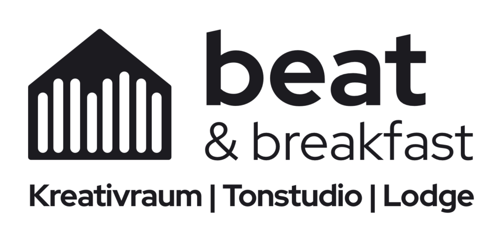
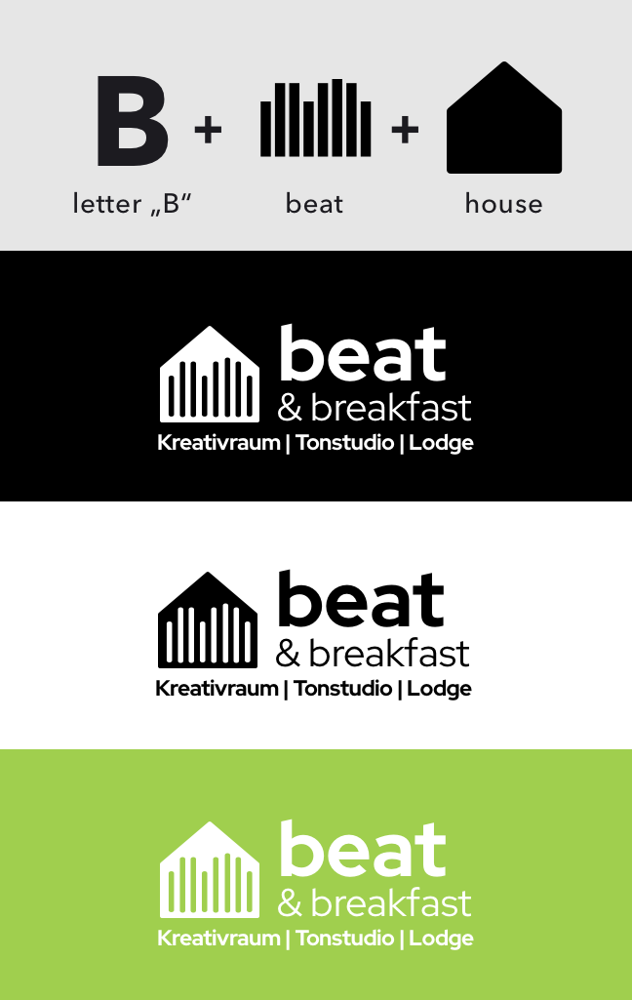
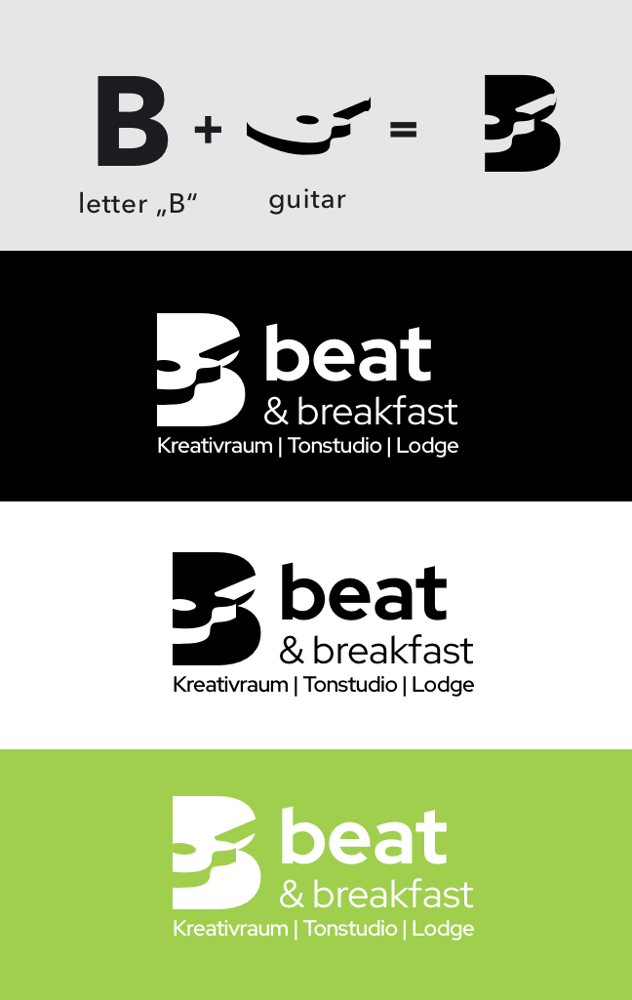
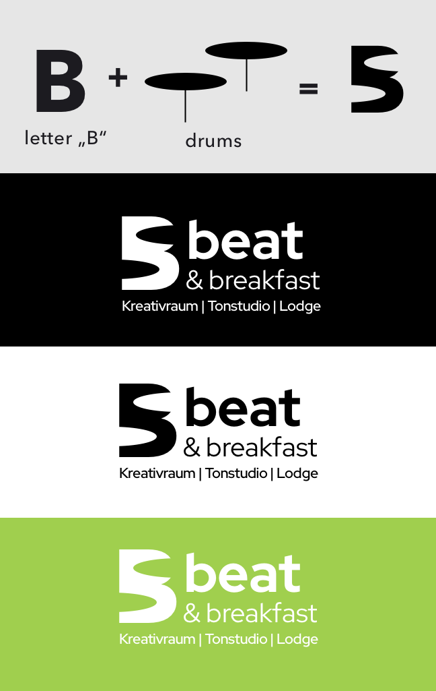
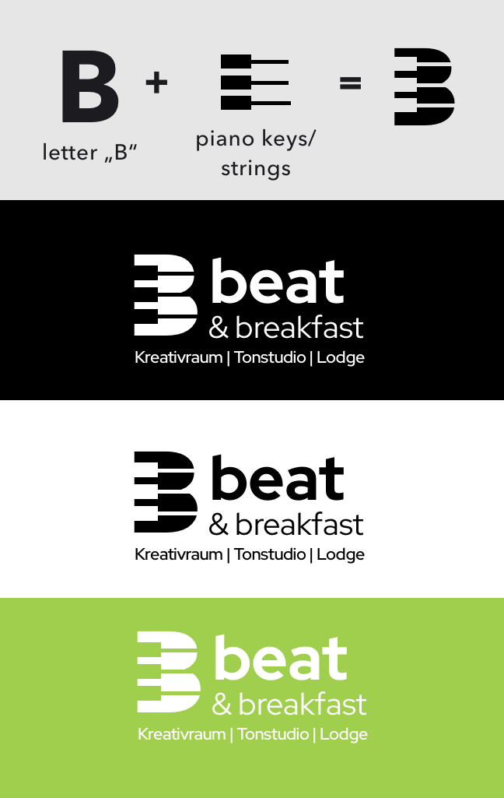
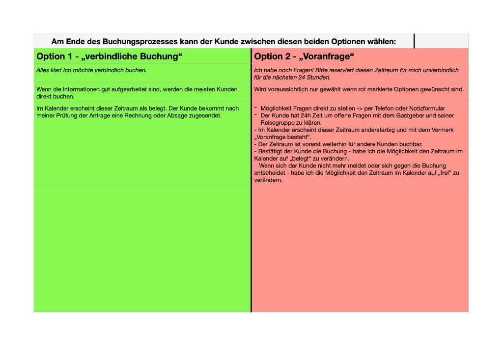

Label every price type
Pricing display
Tiered overnight rates by guests and nights; fixed extras with amounts; on-site items labeled separately; request-only services marked price on request.


A holiday home for musicians — vacation with recording studio and rehearsal room. When I joined, bookings ran through email with no transparent pricing online. The challenge: move the on-/offline booking flow from email traffic to a smooth online process, show pricing clearly, represent all B&B offers on the website, and communicate house rules transparently.
Represent accommodation, rehearsal, recording, and wellness extras — with clear navigation and a visual language that matches the creative, hands-on spirit of the house.
Built from the letter B, sound bars, and a house shape — a mark that reads as both music and lodging. Four color variants for web, print, and dark backgrounds.




Custom amenity icons for the Ausstattung section — making a long list of features scannable at a glance, from kitchen and sauna to piano and hot tub.
From email-based requests to a structured online booking experience — with honest pricing, house rules, and add-ons visible before guests commit.
No single checkout total. Rates, rules, and booking paths all had to be clear without pretending the final price was fixed upfront.
Beat and Breakfast is not a flat-rate hotel — it is a special stay for bands: rehearsal, recording, and wellness in one place. Overnight rates depend on guest count and length of stay; some extras have fixed prices, others are billed on departure, and services like a sound engineer or yoga session are price on request only.
Guests can also take one of two booking paths — a binding reservation or a 24-hour inquiry — each with different calendar states and follow-up. A single “total price” at checkout would have been misleading. The real job was to make the rules legible, collect the right guest data upfront, and wire that into clear communication on both sides.

Four principles guided every screen — from how prices are labeled to which booking path a guest takes. Each principle maps to a concrete pattern in the booking plugin.
Label every price type
Tiered overnight rates by guests and nights; fixed extras with amounts; on-site items labeled separately; request-only services marked price on request.
Choose the booking path early
Binding booking for confirmed stays; 24-hour inquiry while the host reviews — calendar states stay visible to everyone.
Surface rules in context
FAQ and house rules linked from overview and option cards — guests see relevant rules when choosing packages or add-ons.
Design the handoff
Auto-emails after booking, invoice on approval, polite rejection on decline, and a pre-arrival reminder one week before check-in.
The site launched at beatandbreakfast.de — replacing email back-and-forth with a bookable online presence, transparent pricing, and a clear overview of every offer. Booking confirmations went up, and guests now plan stays up to a year ahead. Deliverables included brand identity, website UX/UI, booking plugin design, offer documentation, and an amenity icon system. The client keeps full control over content updates in WordPress. Designing for a musician audience meant leaning into bold Metropolis typography and a hands-on, creative feel — not a generic hospitality template.